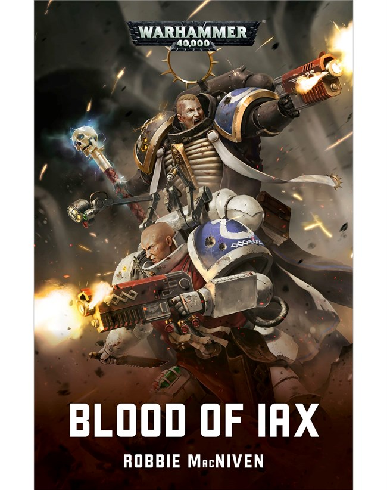
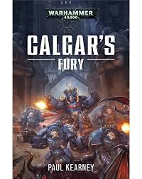
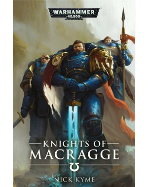

Series
Ultramarine Novel Series
Schrijver: Graham McNeillJaren actief: 2002-2010Aantal boeken: 6
Boeken
Blood of Iax
Schrijver: Robbie MacNivenPublicatiejaar: 2018 Het verhaal: In het tijdperk van het Donkere Keizerrijk zijn Primarch Guillimans Primaris Ultramarines een schijnend baken in de duisternis van oorlog. Op de Keizerlijke Hive Wereld Ikara IX houden Chaplain Kastor en Apothecary Polixis, broeders zowel in bloed als in strijd, stand tegen de eindeloze groenhuidige horde. Maar er is een dreiging. Een invasie als geen ander valt de verwoestte stad Shebat aan, terwijl de waanzinnige krijgsheer Urgork arriveert om de Keizerlijke strijdmacht te vernietigen en Primaris Marines gevangen te nemen voor zijn eigen verdorven doeleinden. Kastor en Polixis worden geïsoleerd door een ramp, moeten de broeders het tij keren om de strijd te winnen die in hun aard woedt, evenals die op het slagveld.
Calgar's fury
Schrijver: Paul KearneyPublicatiejaar: 2017 Het verhaal: Het Rijk van Ultramar staat als een schijnend baken van orde en kracht in een sterrenstelsel dat is verwoest door oorlog en kwelling. Als bewaarder van dit rijk en Chaper Master van de Ultramarines, heeft Marneus Calgar vele vijanden bevochten en talloze oorlogen gewonnen om te zorgen dat de grenzen veilig blijven. Maar wanneer een enorme space hulk verschijnt in het Ultramar-systeem en de dreiging van iets ouds en verschrikkelijks met zich meebrengt is het Calgar opnieuw die zijn rijk verdedigt, bereid om alle gruwelen aan boord te ontmoeten en het mysterie in het hart va het schip genaamd Fury te ontdekken.
Knights of Macragge
Schrijver: Nick KymePublicatiejaar: 2019 Het verhaal: De Primarch Roboute Guilliman van de Ultramarines is teruggekomen wanneer de nood van de Melkweg het hoogst was, en iedereen verzamelt voor de Indomitus-kruistocht om de duisternis weg te houden. Een van de aanwezige helden is Cato Sicarius, Meester van de Wacht en geroemde kapitein van de Tweede Compagnie. Een ramp overkomt Sicarius en zijn dappere krijgers, want hun schip, de Emperor's Will, verloren is in de warp, en alle bemanning is dood gewaant. Maar Sicarius houdt stand, hoewel hij en zijn bemanning vechten voor hun leven tegen de bewoners van de Grote Scheur; de daimonen en afvalligen van Chaos. Op drift geraakt en oorlogsvermoeid, alle hoop lijkt verloren te zijn, totdat de storm eindelijk breekt en een vreemde wereld lonkt. Terwijl de kapitein en een groep gekozen krijgers naar het oppervlakte afdalen zoekend naar hulp, vinden ze een geisoleerd land, schijnbaar uit een oud tijdperk, en geplaagd door een verschrikkelijke vijand. Sicarius zal deze wereld niet zien lijden, en belooft dat zijn krijgers zullen helpen. Hij is gedetemineerd om de wereld te redden, ongeacht de kosten...Maar wat is het duistere geheim dat hier wordt bewaard, aan wat betekent het voor de Ultramarines als ze het ontdekken?